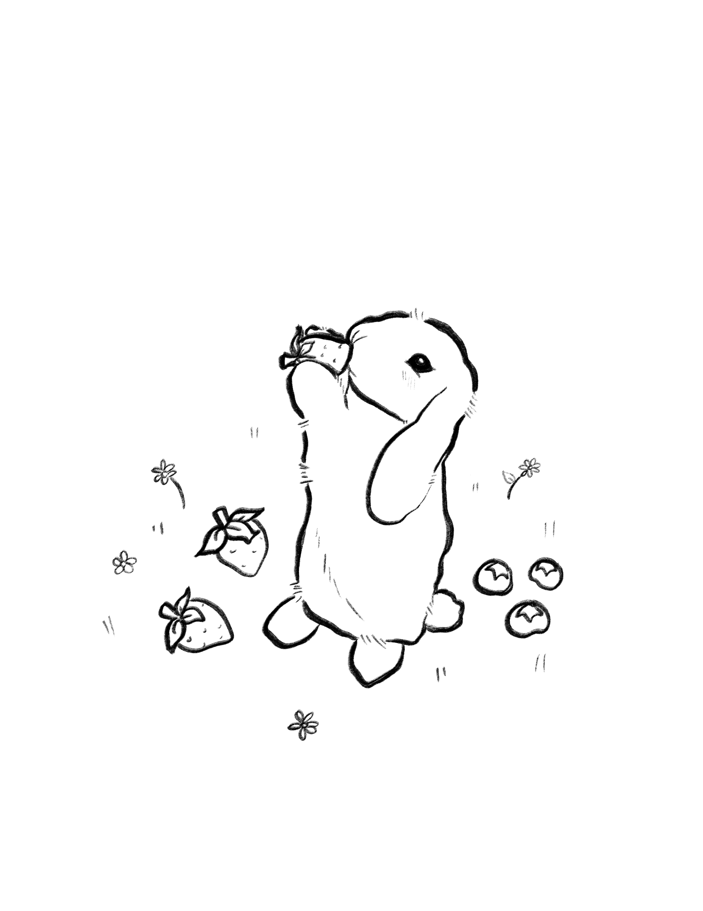
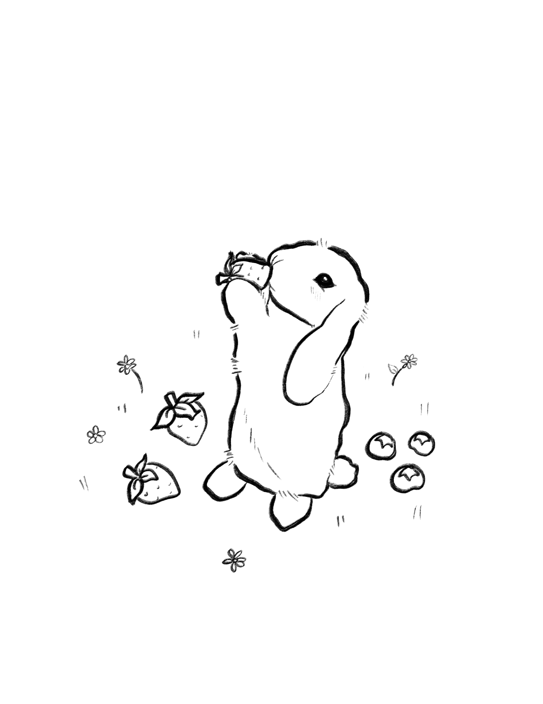
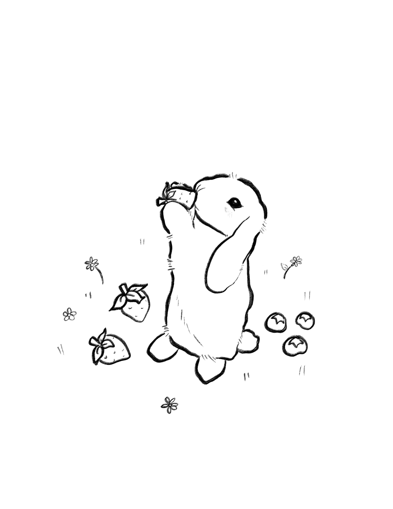
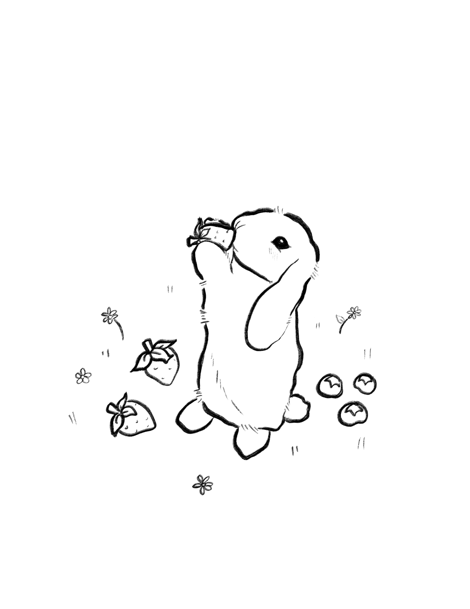

Illustrate icons and coloring pages with Procreate, Illustrator, and Photoshop, design in InDesign. Coloring pages and Illustrations are used for the Netter Center's Fruit Stand and Rebel Bucks programs.


 

 
